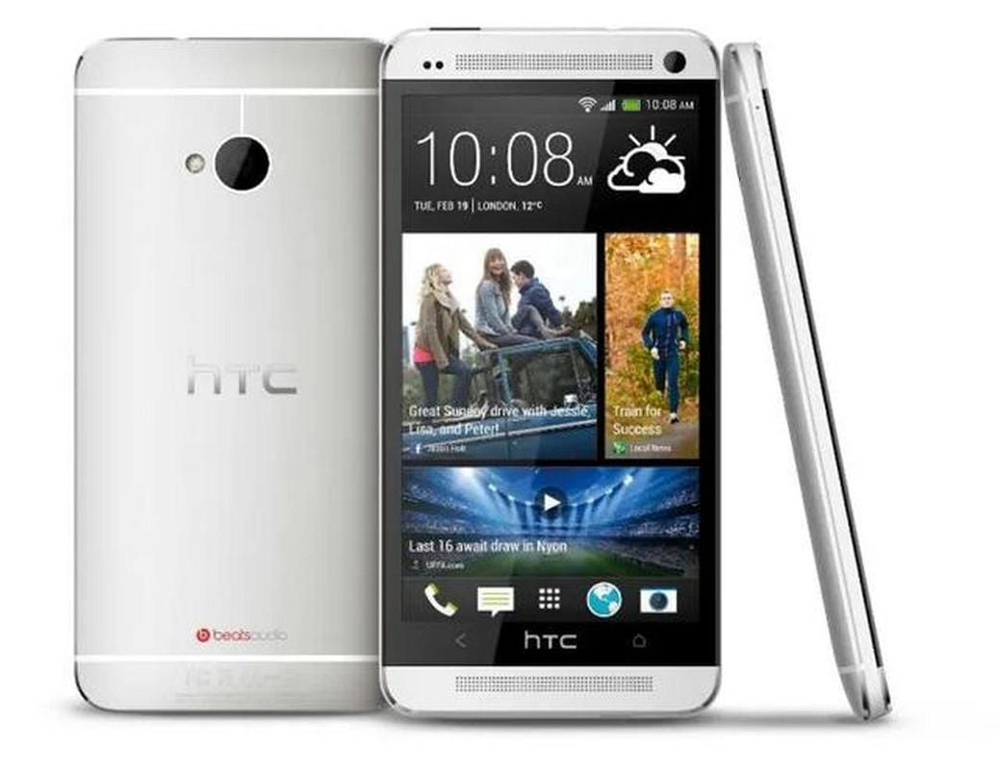

HTC One M7

全金属一体机身开山者，设计封神却销量惨淡。
客观评测
M7 是 2013 年工艺最惊艳的安卓旗舰：全金属一体成型机身仅 143g，双前置 BoomSound 扬声器重新定义了手机外放。硬件上骁龙 600 加 1080p 屏幕属顶级，但 400 万像素 UltraPixel 摄像头是一次失败的赌博——单像素尺寸做大了，解析力却被同代 1300 万像素对手远远甩开。加之 Sense 5 界面大改、营销乏力，M7 叫好不叫座。
主观点评
第一次摸到 M7 会真心感叹：手机原来可以做得这么美。金属的凉、弧背的贴合、点亮屏幕后边框几乎隐形的错觉，都让人舍不得放下。可惜它拍照发黄、容易发热，是典型的'艺术家型产品'。HTC 后来再没能复制这份惊艳，M7 便成了安卓设计史上一颗令人叹惋的明珠。
优点与不足
- 全金属一体机身工艺领先，设计影响了整个行业
- BoomSound 双前置扬声器音质外放当年无敌
- 4.7 英寸 1080p 屏幕显示细腻，握持紧凑
- UltraPixel 像素过低导致解析力不足，成像平庸
- 金属机身易沾染指纹，2300mAh 电池续航平平
参数规格
| 屏幕 | 4.7 英寸 Super LCD3，1920×1080 |
|---|---|
| 处理器 | 高通骁龙 600 |
| 内存 | 2GB RAM |
| 存储 | 32GB，不支持扩展 |
| 摄像头 | 后置 400 万像素 UltraPixel |
| 音响 | 双前置立体声扬声器（BoomSound） |
| 系统 | Android 4.1＋Sense 5 |
| 电池 | 2300mAh，不可拆卸 |
| 特色 | 全金属一体成型机身 |
| 网络 | 4G LTE |
| 重量 | 约 143g |